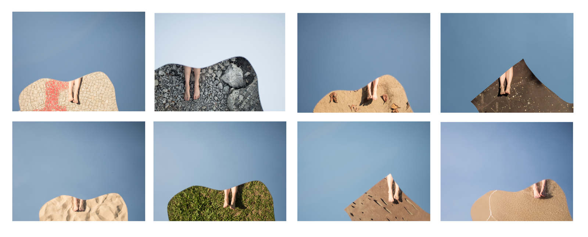

o que esquecemos de tocar quando colonizamos as estrelas (what we forgot to touch when we colonized the stars)

2014
série aberta* feita com um espelho quebrado (open * series is made with a broken mirror)
jato de tinta sobre papel hahnemühle (inkjet on hahnemühle paper)
40 cm x 30 cm [cada / each]
*museu de arte moderna, igreja da candelária, ruínas da perimetral, praia do leme, planetário da gávea, praia de botafogo, aterro